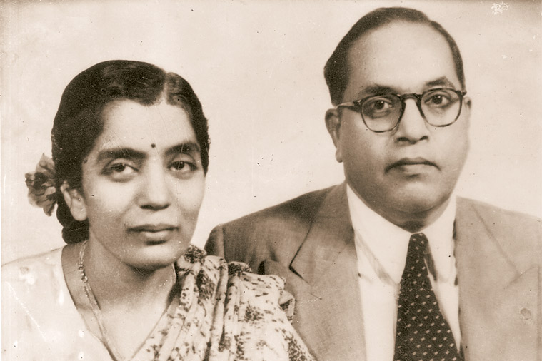

The discussion ‘Commitment to India’s Constitution’, on the day India adopted the statute in 1949, had parties across Treasury and Opposition benches seeing own party positions reflected in the statute — from whether ‘secular’ should find a place, to if it is time to move towards ‘areligious’.
Rajnath Singh (Lucknow)
Union Home Minister
“Despite facing insult and discrimination, he (Ambedkar) still presented an objective point of view on the Constitution… He never thought of leaving India for any other country.”
“The words ‘socialist’ and ‘secular’ were incorporated in the Preamble through the 42nd amendment of the Constitution… B R Ambedkar had never thought of the necessity to incorporate these in the Preamble. It is inbuilt in the Indian system… ‘Secularism’ is the most misused word in the country. The misuse of the word ‘secular’ should be stopped immediately. The literal translation of the word secularism is panth nirpeksh, that is sect-neutral, and not dharm nirpeksh. India’s religion itself is dharm nirpeksh. Because of the rampant misuse of the word, we are finding it difficult to establish social harmony.”
“The rights that have been given to the exploited and deprived… the acceptance of the Constitution was nothing less than a bloodless revolution… Reservation is a socio-political necessity. There is no scope (for further debate)…”
“ Sweeping streets was considered lowly work… For the first time in our independent country’s history, our PM launched the Swachh Bharat Abhiyan… Everyone in India came out with brooms to the streets… Our government is determined not to rest till we have eradicated untouchability (as envisaged by the Constitution).”
“Who can be a bigger democrat than Lord Ram? A person at the smallest rung of society pointed a finger and he put his wife Sita through agni pariksha.”
Sonia Gandhi (Rae Bareli)
Congress President
“It is indisputable that secular values are enshrined in our Constitution, and that they make our democracy more representative and our governments more accountable. But we shouldn’t forget that warning of Dr Ambedkar, ‘However good a Constitution may be, if those who are implementing it are not good, it will prove to be bad. However bad a Constitution may be, if those implementing it are good, it will prove to be good’.”
“The values and principles of our Constitution that have inspired us for generations are today under threat. What we have been witnessing for the past few months is completely against the Constitution. People who never had faith in the Constitution, nor had they participated in its drafting, are now swearing by it and are laying claim to it… There cannot be a bigger joke than this…”
“It was under Jawaharlal Nehru (that) the Congress in its Karachi session in March 1931 brought a resolution on fundamental rights and economic rights.”
“The Constituent Assembly was guided from time to time by four eminent people respected by everyone — Jawaharlal Nehru, Sardar Patel, Rajendra Prasad and Maulana Azad… I pay my tribute to them and others who have given us this invaluable legacy.”
Mallikarjun Kharge (Gulbarga) Congress leader in LS
“Who said he ( Aamir Khan ) wanted to leave the country? He never wanted to leave the country. You have come from outside. You Aryans have come here from outside. We are here for the last 5,000 years.”
“Ambedkar was also in favour of putting the word (secularism) in the Preamble, but could not do so due to the prevailing situation then.”
“The cases registered under the SC/ST Atrocities Act have risen 20 per cent in the past year… When Dalit kids were burnt, what did V K Singh say? ‘That if a stone hits a dog, should the PM comment on it?’. Does the PM agree with this?… It seems this is your thinking… that is what is percolating.”
Sumitra Mahajan
Lok Sabha Speaker
“Individual rights and freedoms are as sacrosanct as the common good… Criticism and dissent, especially through the media and intellectual discourse, are vibrant and are part and parcel of our democracy. The Constitution… guarantees each person freedom of faith, religion and worship… For a country home to adherents of almost all the major religions of the world, it is both an imperative and a societal culture to respect each other’s religions and to promote harmony among all of them….”
“In a democracy, unanimity is of utmost importance. For this, elected representatives have to sit together and find a solution to people’s problems.”
Ram Vilas Paswan (Hajipur)
Union Minister
“There has been enough of Hindu, Muslim, communalism, securalism. Tell us, after 66 years of Independence, what is the condition of Dalits? Of backwards, Muslims and the poor?”
“Day by day our democracy is going down… Even Dr Ambedkar had warned that if the downtrodden don’t get economic and social liberty, (they) can bring down the Constitution… It is your (the government’s) responsibility to find a way.”
“There is the question of reservation in promotion. It’s fine that there shouldn’t be reservation among scientists, in efficiency, but there can be reservation in Class III, Class IV… Go to the press, TV, you won’t find .001 per cent SC people there… That’s why we say that in the private sector, if you can’t have reservation, there should be affirmative action… If we really want to pay a tribute to the Constitution, the government and Opposition are accountable towards realising its soul, which is ‘power to the poor’.”
Ram Mohan Naidu Kinjarapu (Srikakulam), TDP
“In the UPA rule, when our state was going to be divided, our Assembly passed a resolution that we want the state to be united… But the Centre overlooked that because there is a provision in the Constitution… This is not healthy democracy… If the Centre has to divide, it has to play the role of an elder brother. When Dr Ambedkar made the Constitution, he thought good people will implement it, not people who will misuse it. It is because of this that we facing problems now… Serious respect has to be given to cooperative federalism.”
“To respect the Constitution… we have to make sure that there is proper cooperation between the Legislature and Judiciary also… Recently we have seen many things where they have been interfering with the will of the people.”
P Venugopal (tiruvallur)
AIADMK
“A level playing field must be provided with a positive mindset. The talk of majorityism and minorityism must be avoided. Have we ensured that? If we are doing it, why is there a talk of tinkering with reservation? It is coming to the fore off and on… Whoever is contributing to such needless debates and whipping up passions, must mend their ways. I am not taking the name of any party which is spreading tension.”
“Should we not ensure human dignity to get better attention than animals? We must not give undue importance to certain things which are not mandatory but are merely suggested principles in our Constitution.”
Anandrao Adsul (Amravati)
Shiv Sena
“Those who talk of federalism, we are seeing its right implementation here… Today, the benefits have reached every corner of the country, be it skill initiative or any other scheme… Our government made a memorial for Dr Ambedkar in London… It also made space (for another memorial) in Indu Mills (Mumbai) for him…”
“A government should only work as per the Constitution. The difference between this government and the previous one is this. This government is working as per the Constitution, judging what will benefit the people.”
Sudip Bandyopadhyay (kolkata)
Trinamool Congress
“I do not know why when Shri Rajnath Singhji was saying the word ‘secularism’, all the ruling party members in the House were clapping. It appears something happens to the government when the word is mentioned. What for are we standing here?… Nobody should oppose the very term ‘secularism;. Being the Home Minister of the country, he should not criticise the Constitution as it stands now.”
“I have seen the Twitter message issued by the PM today. (That) should have been reflected on the floor of the House and should have been the actual line of the first speaker from the government side.”
“India is a country of tolerance… but a few incidents are sending negative messages. In such matters the PM will have to rise to the occasion. He has certainly criticised them and said these things should not happen. But he did it abroad… I would appeal to him to consider this.”
Tariq anwar (Katihar)
NCP
“The Home Minister’s objections to addition of words secular and socialist in the Preamble surprised me, and brought forth what the present government really thinks. They don’t like the word ‘secularism’. Those who believe in ‘Sarv Dharm Sambhav’ say that the word ‘secularism’ was wrongly added… They are giving the wrong impression… It is clear that we know ‘Sarv Dharm Sambhav’ only as secularism. Gandhiji showed us this.”
“The country can’t be run with such a narrow vision, it needs a big heart. The PM is present here. I want to tell him that ‘Sabka Saath, Sabka Vikas’ is a good slogan, but it shouldn’t remain just a slogan.”
Tathagata Satpathy (dhenkanal) BJD
“Everybody speaks everywhere, on television and we see everyday in the media, saying that let us not politicise the issue (of intolerance). Even in the House, some leaders and ministers say we should not politicise the issue. Well, we are all politicians here… let us not denigrate politics… Let us also think that we have come to a stage, in history, of ‘areligiousness’… Let us consider if we are prepared to face a level where we become an areligious country… As a government, why should you have pictures of certain gods in government offices and not of other gods?”
“Article 19 talks about freedom of expression. They used the words decency, morality, defamation. Like you object to secular, I object to morality, to decency because what is decent for me may not be decent for the December 16 rapist (Delhi 2012 incident)….”
Jai Prakash Narayan Yadav (BANKA) RJD
“We saw one proof of Babasaheb Ambedkar’s power just recently, in Bihar, where a new government has been formed to fulfill his dreams… But it is a long fight. The face of the House has to change… Our role (the role of the backwards) in swaraj must be assured.”
“From all corners, we are hearing talk of intolerance. Munawwar Rana (who returned his Sahitya Akademi award) was crying. When he was crying, India’s soul was crying… Shah Rukh Khan is abused, told to go to Hafiz (Hafiz Saeed)… Is this language part of Indian culture?… Is this the power Dr Ambedkar gave us?”
“Reservation is in the Constitution. Reservation is not a favour. Reservation is not a right gifted by someone… Please reveal the data of the caste census.”
————————————————————————————————————————————–
B R Ambedkar’s Speech (Excerpts)
November 26, 1949
‘Act now or those facing inequality will blow up structure of democracy’

One man one value
“We have in India a society based on the principle of graded inequality… a society in which there are some who have immense wealth as against many who live in abject poverty. On the 26th of January 1950, we are going to enter into a life of contradictions. In politics, we will have equality and in social and economic life, we will have inequality. In politics we will be recognising the principle of one man one vote and one vote one value. In our social and economic life, we shall, by reason of our social and economic structure, continue to deny the principle of one man one value… We must remove this contradiction at the earliest possible moment or else those who suffer from inequality will blow up the structure of political democracy… The second thing we are wanting in is recognition of the principle of fraternity. What does fraternity mean? Fraternity means… common brotherhood of all Indians….”
The politics of pedestals
“The second thing we must do is to observe the caution which John Stuart Mill has given to all who are interested in the maintenance of democracy, namely, not to lay their liberties at the feet of even a great man, or to trust him with power which enables him to subvert their institutions. There is nothing wrong in being grateful to great men who have rendered life-long services to the country. But there are limits to gratefulness… This caution is far more necessary in the case of India than in the case of any other country… Bhakti in religion may be a road to the salvation of the soul. But in politics, Bhakti or hero-worship is a sure road to degradation and to eventual dictatorship.”
Govts for people vs govts by people
“By Independence, we have lost the excuse of blaming the British for anything going wrong… There is great danger of things going wrong. People including our own are being moved by new ideologies. They are getting tired of government by the people. They are prepared to have governments for the people and are indifferent whether it is government of the people and by the people. If we wish to preserve the Constitution… let us resolve not to be tardy in the recognition of the evils that lie across our path.”